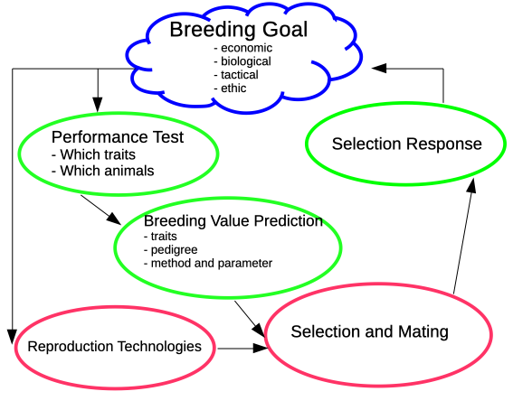

Pig Science - Breeding
Program - Breeding
| Week | Date | Topic |
|---|---|---|
| 1 | 2023/04/24 | Genomic Selection in Pig Breeding |
| 2 | 2023/05/15 | Breeding Goal and Aggregate Genotype |
Information
- Lecturer: S. Neuenschwander, C. Kasper, G. Bee, P. von Rohr
- Date: Wednesday 8-10
- Mode: in person
- Room: LFW B2
- Moodle: https://moodle-app2.let.ethz.ch/course/view.php?id=21680
- Website: https://charlotte-ngs.github.io/psbss2024
- Questions: during the lecture and during the exercise hour or via e-mail
- Peter von Rohr (peter.vonrohr
atusys.ethz.ch)
- Peter von Rohr (peter.vonrohr
Course Objectives
The students
- understand the theoretical background and the practical application of the prediction of breeding values in a livestock breeding
- know how to interpret predicted breeding values.
\(\rightarrow\) What is the meaning of a predicted aggregate genotype \(-9\) index points
\(\rightarrow\) What is the difference between production and breeding
Further Reading
- Willam und Simianer: Tierzucht - Grundwissen Bachelor (Ulmer, UTB 3526 2011). This book gives an introduction into evolution, livestock production and breeding programs.
- Falconer and Mackay: Introduction to Quantitative Genetics (Longman). The de-facto standard in the area of quantitative genetics uses many examples from experimental research to illustrate the concepts of quantitative genetics.
- Mrode: Linear Models for the Prediction of Animal Breeding Values (CABI Publishing, 2005). The main focus is on prediction of breeding values using different models.
Terminology
Scientific Definition
“Selection and Mating of parents are used such that offspring generations are closer to a defined goal.”
- Distinction between
- livestock breeding and production
- cattle breeding and milk or beef production
- pig breeding and pork production and
- chicken breeding and egg producers
History
- Formations of breeding organisation (BO)
- Tasks of BO: herdbooks and certification
- Crisis at beginning of \(20^{th}\) century lead to federal regulations
- Developments of technologies
- Reproduction
- Molecular biology
- Computer science
Breeding Organisations
Breeding Programs

Parts of Breeding Program
- Applied prediction of breeding values is a part of the breeding program
- Design and planning of a breeding program requires to answer the questions
- What goal do we want to achieve
- What measures do we want to use to achieve the goal
Types of Breeding Programs
Two types of breeding programs
- Focus on selection response
- countries with limited resources
- big farms or big companies
- Focus on clients and services
- cattle and pig breeding of developed countries
- economic interest of companies and farms
Breeding Goals
Types of breeding goals
- economic
- biological
- tactical
- ethical
Breeding goals might be formulated in different ways
- political: description of idealized image of future animal. Often conflicting and not verifiable
- scientific: mathematical description of direction of desired change. Measurable via selection response
Performance Testing
- Basic question: What trait is measured when for which animals
- Breeding should be based on data
- Quality of derived parameters (heritability, predicted breeding values) depend on accuracy of collected data
- Data collection used for performance testing often started for different reasons
- milk sample testing: quality of product
- station testing in pigs: correction of environment
Classification of Performance Tests
- Place
- Station
- Field
- Relationship between selection candidate and tested animal
- own performance record
- full-sib
- progeny
- Traits
- should have genetic variation
- economic importance
- measurable better than subjectively observed
Examples: Pigs
Examples: Cattle
Prediction Of Breeding Values
- Done in most breeding programs
- Federal regulation
- Performance tests much more expensive
- Different intervals
- cattle: three times per year (traditional), every two weeks (genomic)
- pigs: nightly or weekly
Progress In Technologies
- Reproduction - AI
- disease prevention
- number of progeny per sire increased
- better comparisons between herds
- Future: more development on female side
- Molecular Biology
- cheap and efficient large-scale genotyping
- sequencing with more accuracy
- Computer Science
- efficient evaluation of large amounts of data
- big data technologies - continuous monitoring
Differences Of BP Between Species
Breeding programs (BP) for different species have different structure
- hierarchical: pigs and chicken
- flat: cattle and horse